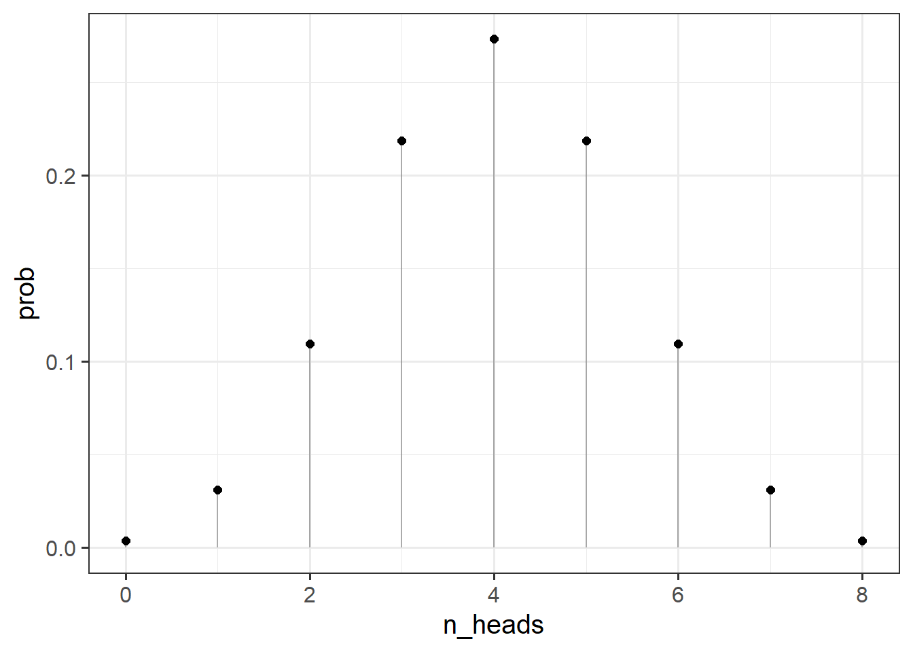

rbinom(n = 1, size = 1, prob = 0.5)[1] 0Upon hearing the terms “probability” and “likelihood”, people will often tend to interpret them as synonymous. In statistics, however, the distinction between these two concepts is very important (and often misunderstood).
In the statistical framework we have been learning, “probability” refers to the chance of observing possible results if some certain state of the world were true1
Likelihood refers to the probability of seeing our data, given some hypothesis.
Let’s consider a coin flip. For a fair coin, the chance of getting a heads/tails for any given flip is 0.5.
We can simulate the number of “heads” in a single fair coin flip with the following code (because it is a single flip, it’s just going to return 0 or 1):
rbinom(n = 1, size = 1, prob = 0.5)[1] 0We can simulate the number of “heads” in 8 fair coin flips with the following code:
rbinom(n = 1, size = 8, prob = 0.5)[1] 4As the coin is fair, what number of heads would we expect to see out of 8 coin flips? Answer: 4! Doing another 8 flips:
rbinom(n = 1, size = 8, prob = 0.5)[1] 3and another 8:
rbinom(n = 1, size = 8, prob = 0.5)[1] 3We see that they tend to be around our intuition expected number of 4 heads. We can change n = 1 to ask rbinom() to not just do 1 set of 8 coin flips, but to do 1000 sets of 8 flips:
table(rbinom(n = 1000, size = 8, prob = 0.5))
0 1 2 3 4 5 6 7 8
1 40 110 205 275 247 95 25 2 So what is the probability of observing \(k\) heads in \(n\) flips of a fair coin?
As coin flips are independent, we can calculate probability using the product rule (\(P(AB) = P(A)\cdot P(B)\) where \(A\) and \(B\) are independent).
So the probability of observing 2 heads in 2 flips is \(0.5 \cdot 0.5 = 0.25\)
We can get to this probability using dbinom():
dbinom(2, size=2, prob=0.5)[1] 0.25In 8 flips, those two heads could occur in various ways:
| Ways to get 2 heads in 8 flips |
|---|
| HTTTTTTH |
| TTTHTHTT |
| TTTTTTHH |
| TTTHTTTH |
| HTTTTHTT |
| TTHTTTTH |
| TTTTTHTH |
| HTTTTTHT |
| TTTHHTTT |
| TTHTTTHT |
| ... |
As it happens, there are 28 different ways this could happen.2
The probability of getting 2 heads in 8 flips of a fair coin is, therefore:
28 * (0.5^8)[1] 0.109375Or, using dbinom()
dbinom(2, size = 8, prob = 0.5)[1] 0.109375The important thing here is that when we are computing the probability, two things are fixed:
We can then can compute the probabilities for observing various numbers of heads:
dbinom(0:8, 8, prob = 0.5)[1] 0.00390625 0.03125000 0.10937500 0.21875000 0.27343750 0.21875000 0.10937500
[8] 0.03125000 0.00390625
Note that the probability of observing 10 heads in 8 coin flips is 0, as we would hope!
dbinom(10, 8, prob = 0.5)[1] 0So how does likelihood differ?
For likelihood, we are interested in hypotheses about or models of our coin. Do we think it is a fair coin (for which the probability of heads is 0.5?). Do we think it is biased to land on heads 60% of the time? or 30% of the time? All of these are different ‘models’.
To consider these hypotheses, we need to observe some data - we need to have a given number of flips, and the resulting number of heads.
Whereas when discussing probability, we varied the number of heads, and fixed the parameter that designates the true chance of landing on heads for any given flip, for the likelihood we are fixing the number of heads observed, and can make statements about different possible parameters that might govern the coin’s behaviour.
For example, let’s suppose we did observe 2 heads in 8 flips, what is the probability of seeing this data given various parameters?
Here, our parameter (the probability that we think the coin lands on heads) can take any real number between from 0 to 1, but let’s do it for a selection:
possible_parameters = seq(from = 0, to = 1, by = 0.05)
dbinom(2, 8, possible_parameters) [1] 0.000000e+00 5.145643e-02 1.488035e-01 2.376042e-01 2.936013e-01
[6] 3.114624e-01 2.964755e-01 2.586868e-01 2.090189e-01 1.569492e-01
[11] 1.093750e-01 7.033289e-02 4.128768e-02 2.174668e-02 1.000188e-02
[16] 3.845215e-03 1.146880e-03 2.304323e-04 2.268000e-05 3.948437e-07
[21] 0.000000e+00So what we are doing here is considering the possible parameters that govern our coin. Given that we observed 2 heads in 8 coin flips, it seems very unlikely that the coin weighted such that it lands on heads 80% of the time (e.g., the parameter of 0.8 is not likely). The idea that the coin is fair (0.5 probability) is more likely. The most likely parameter is 0.25 (because \(\frac{2}{8}=0.25\)).
You can visualise this below:

Let \(d\) be our data (our observed outcome), and let \(\theta\) be the parameters that govern the data generating process.
When talking about “probability” we are talking about \(P(d | \theta)\) for a given value of \(\theta\).
E.g. above we were talking about \(P(\text{2 heads in 8 flips}\vert \text{fair coin})\).
In reality, we don’t actually know what \(\theta\) is, but we do observe some data \(d\).
Given that we know that if we have a specific value for \(\theta\), then \(P(d \vert \theta)\) will give us the probability of observing \(d\), we can ask “what value of \(\theta)\) will maximise the probability of observing \(d\)?”.
This will sometimes get written as \(\mathcal{L}(\theta \vert d)\) as the “likelihood function” of our unknown parameters \(\theta\), conditioned upon our observed data \(d\).
This is the typical frequentist stats view. There are other ways to do statistics (not covered in this course) - e.g., in Bayesian statistics, probability relates to the reasonable expectation (or “plausibility”) of a belief↩︎
If you really want to see them all, try running combn(8, 2) in your console.↩︎